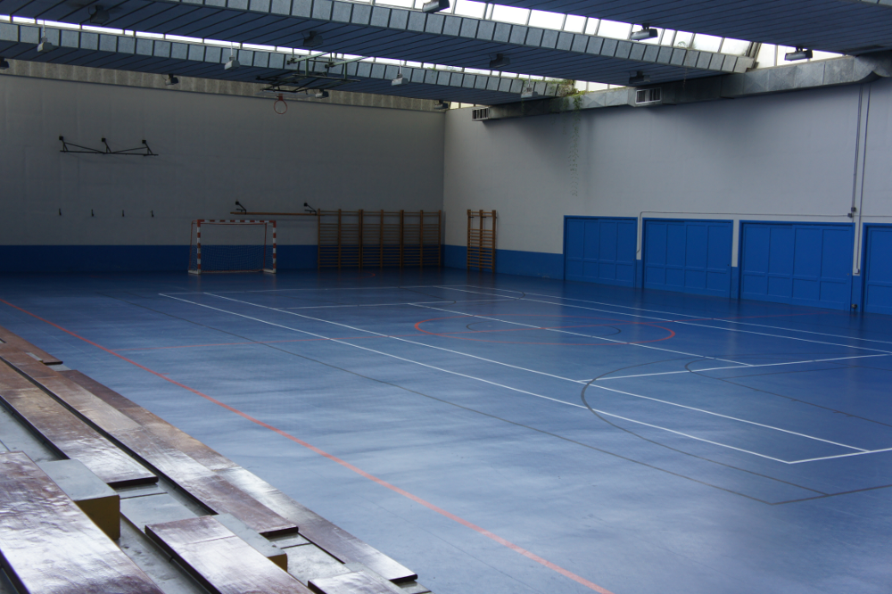
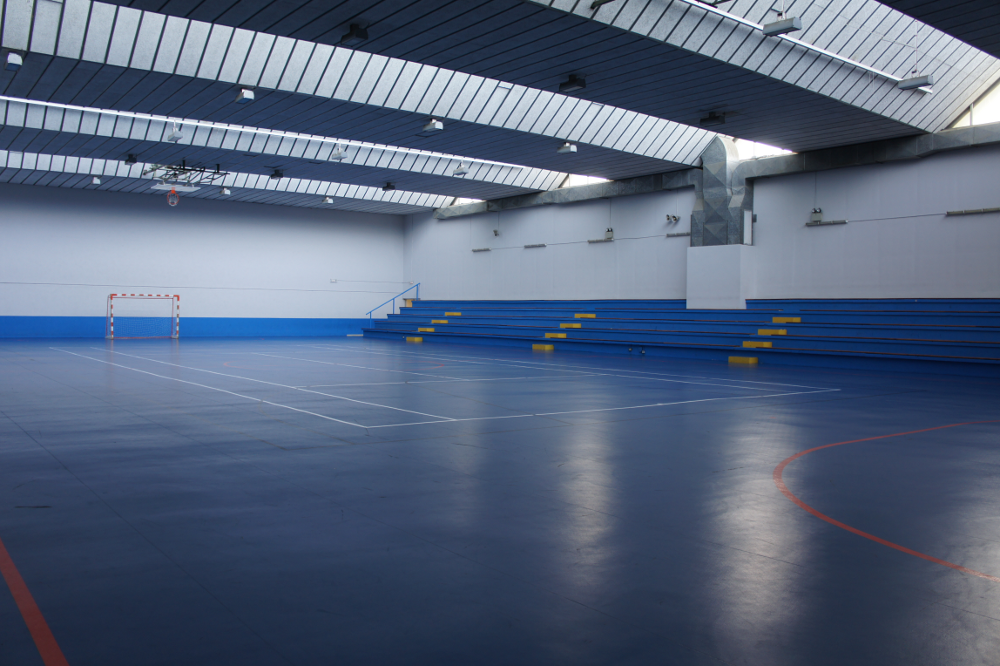

INSTALACIONES:
Campo de Futbol de Arlonagusia:
Dimensiones: 103 x 63 m.
Aforo: 700 espectadores
Hierba Natural
Iluminacion Artificial
Tribuna Cubierta

El campo de Arlonagusia sera el campo de entrenamiento y partidos para los equipos benjamines, alevines e infantiles.
Polideportivo Municipal de Lemoa:
Cancha de futbol sala


En el Polideportivo Municipal se desarrollaran las sesiones de entrenamiento de los equipos integrantes en la escuela de futbol.